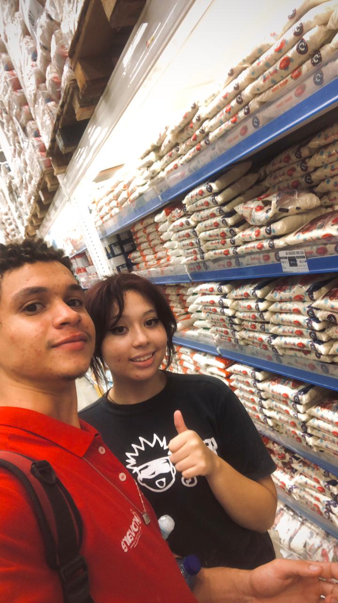
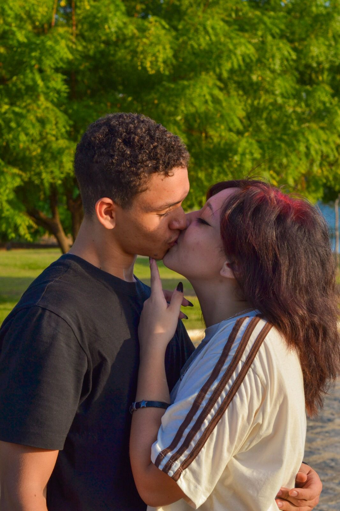
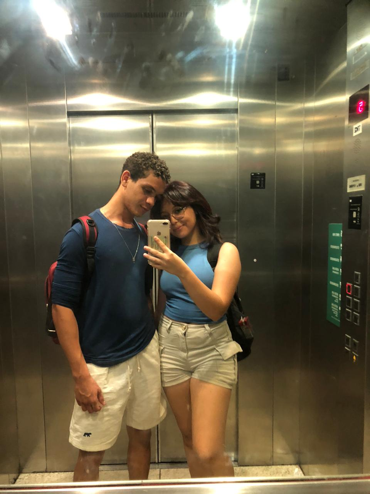
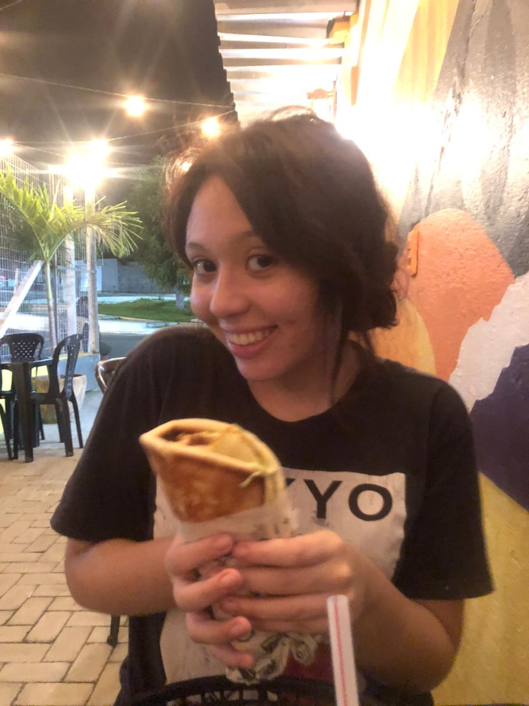
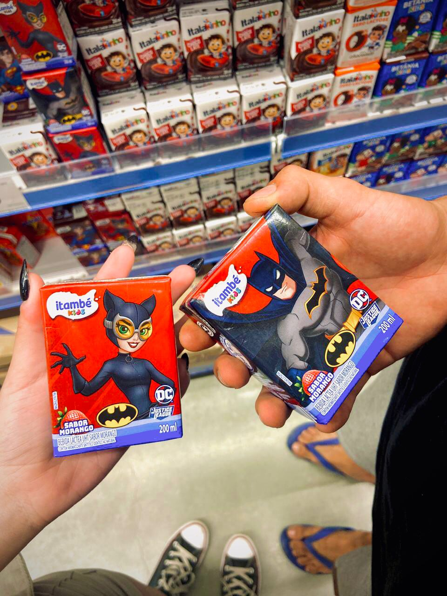
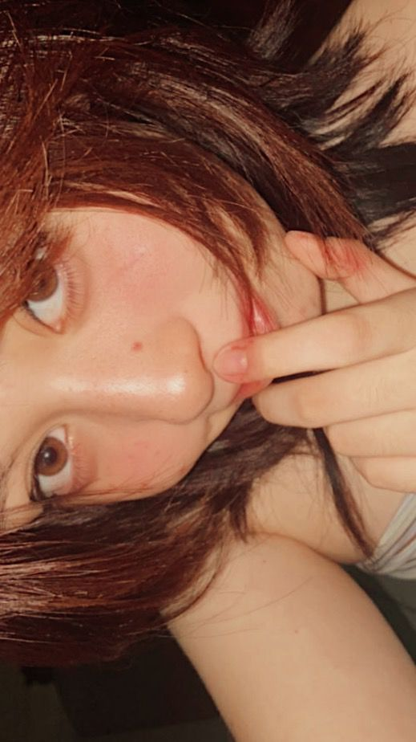
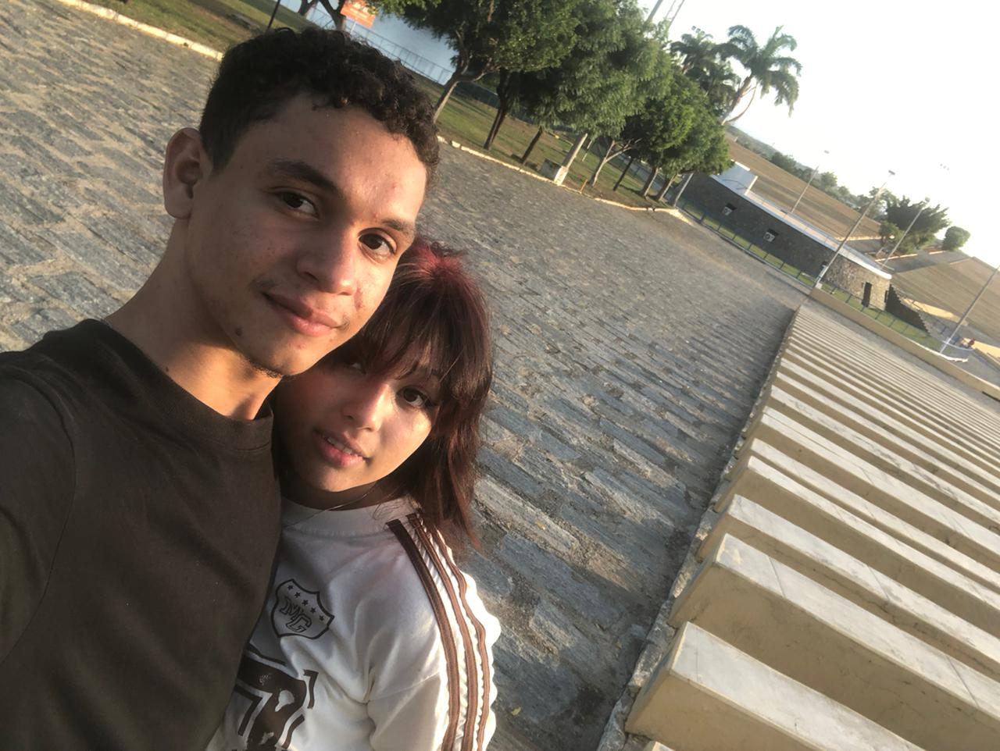

Nosso Tempo ⏳
Desde 19 de Novembro de 2025
Eu te amo infinitamente 💖
Nossos Momentos 📸







Nossas Músicas 🎵
"A Thousand Years - Christina Perri" ❤️
"Those Eyes - New West" ✨
Uma Última Coisa... 💌
Eu te amo, hoje e por todos os próximos mil anos ❤️